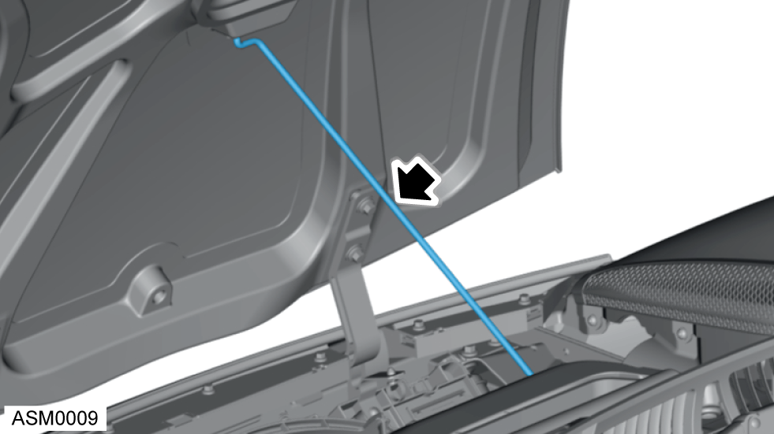
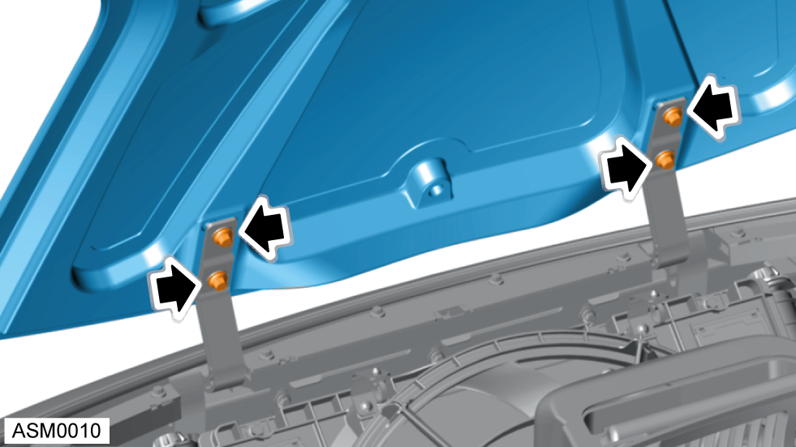
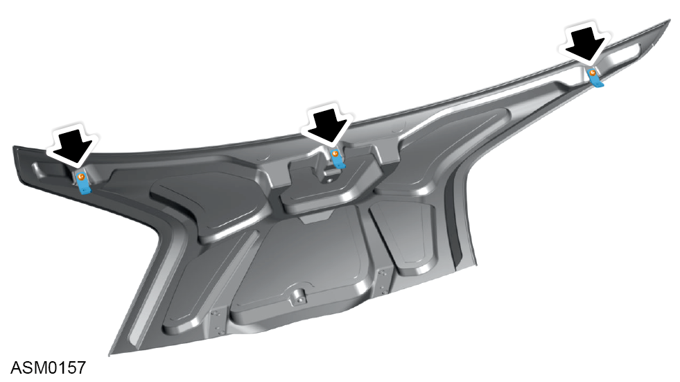

Access Hatch - Front
Print
Operation Code: 10.09.01-02
Removal
- Open access hatch - front. Refer to procedure.
- With assistance support weight of access panel.

- Disengage access hatch stay.

- Remove M8x25 bolts and washers (x4) securing access hatch to access hatch hinges. Torque 24 Nm.
NOTE: To aid installation mark position of access hatch to access hatch hinges.
NOTE: Always record quantity and fitted position of washers.
- With assistance remove access panel from vehicle.
Do not carry out further disassembly if component is removed for access only.

- Remove M6x20 bolts and washers (x3) securing brackets to access hatch. Torque 10 Nm.
- Remove brackets (x3).
Installation
- Installation is the reverse of removal procedure except for the following:
- Check gap and flush tolerances - see Alignment Specifications for Body Panels and Closures section.
NOTE: Make sure access hatch is aligned correctly during installation. Use position marked during removal procedure.
NOTE: Only fully tighten bolts when you have confirmed the panel alignment is correct.